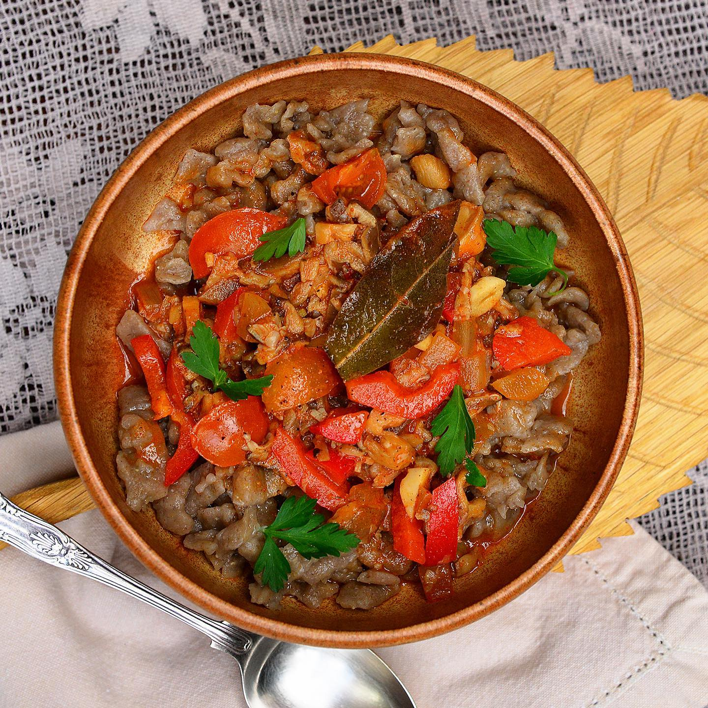

Halušky podľa @myredcarpetbody — Normy Jedál
Mom’s oyster mushrooms “perkelt” with “halusky”.
It’s my mom’s birthday today and I really wish I could be with her.
But because I can’t, I can at least cook some of her yummy food to feel near her.
.
This super simple and quick recipe is one of our family’s favourite meals. We make it using different kinds of mushrooms, usually foraged in the woods.
In London I get my mushrooms from @brambletyefruitfarm at @brookgreen_mk.
As for “halusky”, I make a few versions of these little potato-less gnocchi kind of things - I experiment with different flours and my favourite is rye flour. However, if there is no time, perkelt tastes great even with a slice of fresh bread 😊.
I am sharing my simple oyster mushrooms perkelt recipe below.
.
Recipe:
1 Tbs of olive oil
1/2 of a big onion - chopped
2 cup of chopped oyster mushrooms
1 tsp of sweet paprika powder
1 tsp of spicy paprika powder
1 tsp of mustard- I used @maille Dijon
1/2 of salt
1/2 tsp of pepper
2 tsp of vegetable salt
1/2 cup of chopped tomatoes
1/2 cup of chopped peppers - I used a red pepper from @perrycourt.farm from @brookgreen_mk
1 cup of water
3 Tbs of tomato purée - I love @Sainsbury’s organic
2 bay leaves .
Process:
Cook the onions in the olive oil for a couple of minutes. Add the mushrooms and the bay leaves and stir. Then add all of the other ingredients and cook for about 10 minutes while stirring occasionally. The sauce should be rather liquid but not watery. Taste it before you serve it and you can add more of any of the ingredients if you want to change the flavour to your liking. I sometimes add more mustard.
Take the bay leaves out before serving.
.
Happy evening 🌸.
.
.
.
.
#vegan #dinner #vegandinner #veganrecipes #mushrooms #homechef #londonfoodie #londonvegan #healthyeating #healthycooking #veganlondon #healthydinner #feedfeed #forkyeah #heresmyfood #hereismyfood #thekitchn #fitover40 #halusky #perkelt #easterneurope #worldfood #eatmoreveggies #plasticfree #livelifeontheveg #eattheworld #vegetarian #flexitarian #feedfeedvegan #mindfuleating